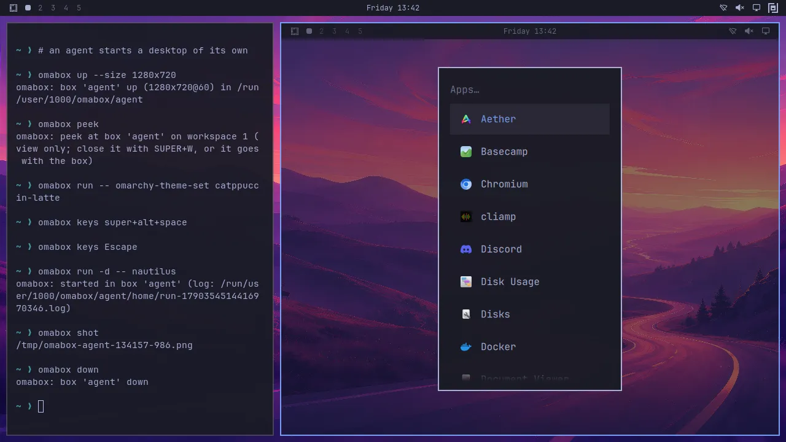

<style>
/* /how-it-works: the four steps, what a box keeps off your desktop and how, what it gets, 1.0's
   hardening, protected ports, the ten rules, agents on their own, one box per session, looking inside */

/* the four steps: an agent's session beside its box, the step on screen lit below (12 s, 3 s a step) */
.life { display: grid; grid-template-columns: minmax(0, 1fr) minmax(0, 1.2fr); gap: 14px; padding: 14px; }
.life > * { min-width: 0; }
@media (max-width: 760px) { .life { grid-template-columns: minmax(0, 1fr); } .term { min-height: 150px; } }
.lbl2 { font: 500 11px/1 var(--mono); letter-spacing: .12em; text-transform: uppercase; color: var(--muted); display: flex; justify-content: space-between; gap: 8px; margin-bottom: 10px; }
.term { margin: 0; min-height: 230px; background: var(--well); border: 1px solid var(--line); border-radius: 10px; padding: 12px 14px; font: 12.5px/1.85 var(--mono); color: var(--ink); overflow: hidden; }
.term > span { display: block; white-space: nowrap; overflow: hidden; text-overflow: ellipsis; animation: 12s linear infinite both; }
.term .p { display: inline; color: var(--box); }
.term .c { color: var(--muted); }
.term .l1 { animation-name: l1; } .term .l2 { animation-name: l2; } .term .l3 { animation-name: l3; } .term .l4 { animation-name: l4; } .term .l5 { animation-name: l5; }
@keyframes l1 { 0% { opacity: 0; } 2%, 94% { opacity: 1; } 98%, 100% { opacity: 0; } }
@keyframes l2 { 0%, 25% { opacity: 0; } 27%, 94% { opacity: 1; } 98%, 100% { opacity: 0; } }
@keyframes l3 { 0%, 50% { opacity: 0; } 52%, 94% { opacity: 1; } 98%, 100% { opacity: 0; } }
@keyframes l4 { 0%, 58% { opacity: 0; } 60%, 94% { opacity: 1; } 98%, 100% { opacity: 0; } }
@keyframes l5 { 0%, 75% { opacity: 0; } 77%, 94% { opacity: 1; } 98%, 100% { opacity: 0; } }
.stage { position: relative; height: 230px; }
.stage .gone { position: absolute; inset: 0; border-radius: 10px; border: 1px dashed var(--line-2); display: grid; place-items: center; text-align: center; font: 12px/1.5 var(--mono); color: var(--muted); opacity: 0; animation: gone 12s linear infinite both; }
@keyframes gone { 0%, 22% { opacity: 1; } 25%, 86% { opacity: 0; } 90%, 100% { opacity: 1; } }
.stage .desk { position: absolute; inset: 0; animation: boxup 12s cubic-bezier(.3, .7, .2, 1) infinite both; }
@keyframes boxup { 0%, 25% { opacity: 0; transform: scale(.9); } 29%, 78% { opacity: 1; transform: none; } 86%, 100% { opacity: 0; transform: scale(.6); } }
.app { position: absolute; left: 8%; top: 22%; width: 84%; height: 66%; border-radius: 7px; border: 1px solid var(--line-2); background: #17171c; animation: appin 12s ease-out infinite both; }
.app .wt { font: 400 10px/1 var(--mono); color: var(--muted); padding: 7px 9px; border-bottom: 1px solid var(--line); }
.app i { display: block; height: 6px; margin: 10px 10px 0; border-radius: 3px; background: rgb(255 255 255 / .09); }
@keyframes appin { 0%, 50% { opacity: 0; transform: translateY(8px); } 53%, 100% { opacity: 1; transform: none; } }
.dlg { position: absolute; left: 40%; top: 46%; width: 46%; padding: 8px 10px; border-radius: 6px; border: 1px solid var(--line-2); background: #22222a; font: 400 10.5px/1.5 var(--mono); color: var(--ink-2); animation: dlg 12s ease-out infinite both; }
.dlg b { color: var(--box); font-weight: 500; }
@keyframes dlg { 0%, 61% { opacity: 0; transform: scale(.94); } 63%, 100% { opacity: 1; transform: none; } }
.ring { position: absolute; left: 50%; top: 52%; width: 26px; height: 26px; margin: -13px 0 0 -13px; border-radius: 50%; border: 2px solid var(--box); opacity: 0; animation: ring 12s ease-out infinite; }
@keyframes ring { 0%, 59% { opacity: 0; transform: scale(.3); } 60% { opacity: 1; transform: scale(.3); } 64%, 100% { opacity: 0; transform: scale(1.6); } }
.yours { margin-top: 10px; font: 400 11.5px/1.4 var(--mono); color: var(--muted); }
.yours b { color: var(--box); font-weight: 500; }
.steps { display: grid; gap: 14px; grid-template-columns: minmax(0, 1fr); margin-top: 14px; }
@media (min-width: 640px) { .steps { grid-template-columns: repeat(2, minmax(0, 1fr)); } }
@media (min-width: 1080px) { .steps { grid-template-columns: repeat(4, minmax(0, 1fr)); } .step .code { font-size: 10.5px; padding: 10px; } }
.step::after { content: ""; position: absolute; inset: -1px; border-radius: inherit; border: 1px solid var(--box); box-shadow: 0 0 24px var(--box-glow); opacity: 0; pointer-events: none; animation: lit 12s linear infinite both; }
.step:nth-child(2)::after { animation-delay: -9s; } .step:nth-child(3)::after { animation-delay: -6s; } .step:nth-child(4)::after { animation-delay: -3s; }
@keyframes lit { 0% { opacity: 0; } 2%, 23% { opacity: 1; } 25%, 100% { opacity: 0; } }
.step .n { font: 600 13px/1 var(--mono); color: var(--box); }
.step .code { font-size: 12px; }

/* never: what can't reach your desktop, each crossed out */
.nevergrid { display: grid; gap: 14px; grid-template-columns: minmax(0, 1fr); }
@media (min-width: 760px) { .nevergrid { grid-template-columns: repeat(2, minmax(0, 1fr)); } }
@media (min-width: 1100px) { .nevergrid { grid-template-columns: repeat(3, minmax(0, 1fr)); } }
.nv .what { position: relative; justify-self: start; font: 500 11.5px var(--mono); letter-spacing: .14em; text-transform: uppercase; color: var(--red); }
.nv .what::after { content: ""; position: absolute; left: -2px; right: -2px; top: 52%; height: 1.5px; background: var(--red); box-shadow: 0 0 8px var(--red); }

/* what a box gets: in it, off until you ask, never */
.fence ul { margin: 0; padding: 0; list-style: none; display: grid; gap: 9px; font-size: 15px; color: var(--ink-2); }
.fence li { padding-left: 20px; position: relative; min-width: 0; }
.fence li::before { position: absolute; left: 0; font: 500 14px/1.6 var(--mono); }
.fence .in-box li::before { content: "+"; color: var(--brand); }
.fence .ask li::before { content: "?"; color: var(--yellow); }
.fence .never li::before { content: "×"; color: var(--red); }
.fence .in-box { --fc: rgb(158 206 106 / .35); }
.fence h3 { display: flex; gap: 10px; align-items: center; }
.fence h3 small { font: 500 10.5px/1 var(--mono); letter-spacing: .12em; text-transform: uppercase; color: var(--muted); }

/* 1.0 holds tighter */
.grp > .tag { margin-bottom: 14px; }
@media (min-width: 860px) { .wide2 { grid-column: span 2; } }
.card .stat { font: 600 44px/1 var(--display); color: var(--box); text-shadow: 0 0 24px var(--box-glow); }
.card .stat small { font-size: 18px; color: var(--ink-2); text-shadow: none; }

/* protected ports: a connected box's tries, each reached or stopped at the wall */
.ports { display: grid; grid-template-columns: 150px minmax(0, 1fr); gap: 18px; padding: 18px; align-items: center; }
.ports > * { min-width: 0; }
.ports .desk { height: 120px; }
.ports .desk p { position: absolute; inset: 24px 10px 10px; display: grid; place-items: center; text-align: center; font: 400 11px/1.4 var(--mono); color: var(--ink-2); }
.tries { display: grid; gap: 12px; }
.try { display: grid; grid-template-columns: minmax(0, 15em) minmax(0, 1fr) 7.5em; gap: 14px; align-items: center; font: 400 12.5px/1.3 var(--mono); }
.try .a { color: var(--ink); min-width: 0; overflow-wrap: anywhere; }
.try .a small { display: block; color: var(--muted); font-size: 11px; }
.try .v { color: var(--box); text-align: right; }
.try.no .v { color: var(--red); }
.lane { position: relative; height: 14px; }
.lane::before { content: ""; position: absolute; left: 0; right: 0; top: 6px; height: 2px; background: repeating-linear-gradient(90deg, var(--line-2) 0 6px, transparent 6px 11px); }
.lane .run { position: absolute; left: 0; top: 0; height: 14px; width: 100%; overflow: hidden; }
.try.no .lane .run { width: 62%; }
.try.no .lane::after { content: ""; position: absolute; left: 62%; top: -2px; width: 3px; height: 18px; border-radius: 2px; background: var(--red); box-shadow: 0 0 10px var(--red); }
.pk { position: absolute; inset: 0; transform: translateX(-100%); animation: pk 2.4s linear infinite; }
.pk::after { content: ""; position: absolute; right: 0; top: 3px; width: 8px; height: 8px; border-radius: 50%; background: var(--box); box-shadow: 0 0 10px var(--box-glow); }
.try.no .pk::after { background: var(--red); box-shadow: 0 0 10px var(--red); }
.try:nth-child(2) .pk { animation-delay: -.6s; } .try:nth-child(3) .pk { animation-delay: -1.2s; } .try:nth-child(4) .pk { animation-delay: -1.8s; }
@keyframes pk { from { transform: translateX(-100%); } to { transform: translateX(0); } }
@media (max-width: 700px) {
  .ports { grid-template-columns: minmax(0, 1fr); }
  .ports .desk { height: 90px; }
  .try { grid-template-columns: minmax(0, 1fr) auto; gap: 6px 12px; }
  .try .lane { grid-column: 1 / -1; grid-row: 2; }
}

/* the ten rules */
.rules { list-style: none; margin: 0; padding: 0; display: grid; gap: 10px; grid-template-columns: minmax(0, 1fr); }
@media (min-width: 860px) { .rules { grid-template-columns: repeat(2, minmax(0, 1fr)); } }
.rules li { display: grid; }
.rules a { display: grid; grid-template-columns: 3.2em minmax(0, 1fr); gap: 12px; align-items: baseline; padding: 14px 16px; border-radius: 12px; border: 1px solid var(--line-2); background: var(--s1); color: var(--ink); text-decoration: none; font-size: 15.5px; line-height: 1.4; transition: border-color .25s; }
.rules a:hover { border-color: rgb(158 206 106 / .5); }
.rules b { font: 600 13px/1 var(--mono); color: var(--box); }
.grp .ctas { margin-top: 24px; }

/* agents */
.chips { display: flex; flex-wrap: wrap; gap: 6px; }
.chip { font: 500 12px/1 var(--mono); padding: 6px 10px; border-radius: 999px; background: var(--panel-2); border: 1px solid var(--line-2); color: var(--ink); }
.optin { --fc: rgb(125 207 255 / .3); }
.optin .tag { font-size: 10.5px; }
.reqs { margin-top: 14px; font: 12px var(--mono); color: var(--muted); }

/* watch: ask, peek, interactive; the widget itself is on /omarchy */
.watch { display: grid; gap: 22px; }
@media (min-width: 860px) { .ways { grid-template-columns: repeat(2, minmax(0, 1fr)); } }
.watch > * { min-width: 0; }
.ways { display: grid; gap: 14px; }
.ask-card { --fc: rgb(158 206 106 / .4); --fb: radial-gradient(90% 120% at 0% 0%, rgb(158 206 106 / .08), transparent 60%), var(--s1); }
.say { justify-self: start; max-width: 100%; padding: 10px 14px; border-radius: 14px 14px 14px 4px; background: var(--s3); color: var(--ink); font-size: 15px; }
.shot { display: block; width: 100%; height: auto; border-radius: 10px; border: 1px solid var(--line); }
</style>
<main class="wrap">
  <section class="page">
    <div class="head">
      <p class="tag">How it works</p>
      <h1>A whole desktop for every agent, <i>none of it on yours.</i></h1>
      <p class="lead">A box is a real Hyprland desktop: its own compositor, its own session bus, on a screen only it can see.
        On Omarchy it is Omarchy's, with your theme and bar. Here is what it keeps off your desktop, and how.</p>
    </div>

    <section class="grp" id="steps" data-anim>
      <h2>The agent starts a box, works in it, <i>and the box goes when the agent does.</i></h2>
      <div class="ws" aria-hidden="true">
        <div class="ws-bar"><span class="dots"><i></i><i></i><i></i></span><span class="t">an agent's session · app-tray-5cc72cdc</span></div>
        <div class="life">
          <div><div class="lbl2"><span>The agent</span><span>its terminal</span></div>
            <pre class="term"><span class="c l1"># a task touches the desktop</span><span class="l2"><span class="p">$ </span>omabox up</span><span class="l3"><span class="p">$ </span>omabox run -d -- ./build/app</span><span class="l4"><span class="p">$ </span>omabox click 600 300 --wait</span><span class="c l5"># the session exits; its box goes too</span></pre></div>
          <div><div class="lbl2"><span>Its box</span><span>only it can see</span></div>
            <div class="stage">
              <div class="gone">no box up<br>nothing of it on screen</div>
              <div class="desk box"><div class="dbar"><span class="wsn"><i class="on">1</i> <i>2</i> <i>3</i></span><span>box · 1920x1080</span></div>
                <div class="app"><div class="wt">app</div><i style="width:62%"></i><i></i><i style="width:40%"></i></div>
                <div class="dlg">Settings<br>☑ <b>Dark mode</b></div>
                <span class="ring"></span></div>
            </div>
            <p class="yours">Your desktop meanwhile: <b>0</b> windows, <b>0</b> focus changes, cursor still.</p></div>
        </div>
      </div>
      <div class="steps">
        <div class="card step"><div class="in"><span class="n">1</span><h3>It reaches for a box</h3><p>Whenever a task touches the desktop: a GUI app, a screenshot, a bar plugin, tests that need a tray or a keyring.</p></div></div>
        <div class="card step"><div class="in"><span class="n">2</span><h3>It starts one</h3><p>A whole desktop only it can see, on one screen or as many monitors as the test needs. Up in a few seconds.</p>
          <pre class="code"><span class="p">$ </span>omabox up</pre></div></div>
        <div class="card step"><div class="in"><span class="n">3</span><h3>It works in it</h3><p>It launches, clicks, types and reads what changed. Your cursor, keyboard and focus are never touched.</p>
          <pre class="code"><span class="p">$ </span>omabox run -d -- ./build/app
<span class="p">$ </span>omabox click 600 300 --wait</pre></div></div>
        <div class="card step"><div class="in"><span class="n">4</span><h3>It goes with the agent</h3><p>When the agent's session exits, its box goes too, notifications and tray icons included.</p></div></div>
      </div>
      <p class="caption">Every command and option: <a href="commands.html">/commands</a>. Several monitors in one box: <a href="develop.html#monitors">/develop</a>.</p>
    </section>

    <section class="grp" id="never">
      <h2>What it keeps off your desktop, <i>and how</i></h2>
      <p class="lead">Everything an agent does to see and test its work happens in its box.</p>
      <div class="nevergrid">
        <div class="card nv"><div class="in"><span class="what">Windows out of nowhere</span><h3>Its own screen</h3><p>A box runs its own compositor on a private screen. Nothing it opens is drawn on yours.</p></div></div>
        <div class="card nv"><div class="in"><span class="what">Your cursor, your keys</span><h3>Its own pointer and keyboard</h3><p>Clicks and keys go to the box's own virtual devices, never through uinput, so your cursor and keyboard are never touched.</p></div></div>
        <div class="card nv"><div class="in"><span class="what">Stolen focus</span><h3>Nothing opens on your session</h3><p>No focus changes, no workspace switches. When you peek, the window opens on workspace 9 without taking focus.</p></div></div>
        <div class="card nv"><div class="in"><span class="what">Password prompts</span><h3>No system bus, a throwaway keyring</h3><p>In a box, <code>pkexec</code> fails at once instead of asking for your password. Its keyring stores and reads secrets without prompting; yours is never asked.</p></div></div>
        <div class="card nv"><div class="in"><span class="what">Leftovers</span><h3>Its own bar</h3><p>Notifications and tray icons land in the box's bar, and go when the box goes.</p></div></div>
        <div class="card nv"><div class="in"><span class="what">Accidents</span><h3>The guard, if you want it</h3><p>With <code>omabox guard on</code>, agents' shells get a display that doesn't exist, so a stray window fails instead of appearing. It catches mistakes; it is not a boundary.</p></div></div>
      </div>
    </section>

    <section class="grp" id="box">
      <h2>What a box gets</h2>
      <p class="lead">Enough of your setup to look and behave like your desktop, and nothing that would let it reach yours.</p>
      <div class="grid3 fence">
        <div class="card in-box"><div class="in"><h3>In the box</h3><ul>
          <li>The repo you started it from, read-only, at the same path (from a git worktree too, so git works there)</li>
          <li>Your theme, bar layout and terminal settings</li>
          <li>Your fonts, read-only, so a theme's or a plugin's faces draw as on your desktop</li>
          <li>mise's toolchains, so node, python and uv work as on the host</li>
          <li>Its own screen, session bus and throwaway keyring</li></ul></div></div>
        <div class="card ask"><div class="in"><h3>Off until you ask</h3><ul>
          <li>Network isolation: <code>--net isolated --allow 8081</code></li>
          <li>Sound: <code>--audio</code>, its own PipeWire, a speaker nobody hears and a silent microphone</li>
          <li>Addresses of its own for an isolated box: <code>--addr</code>, documentation ranges only</li>
          <li>A systemd user manager: <code>--systemd</code></li>
          <li>X11 apps: <code>--xwayland</code></li>
          <li>Your real desktop, one command at a time: <code>omabox host</code></li></ul></div></div>
        <div class="card never"><div class="in"><h3>Never in a box</h3><ul>
          <li>Your agents' and browsers' own stores (<code>~/.claude</code>, <code>~/.codex</code>, browser profiles, <code>~/.pki</code>), whichever way you try to mount them</li>
          <li>Plugin settings that look like a key, token or password</li>
          <li><code>api-keys.env</code>, your hooks, or anything of <code>~/.config/omarchy</code> but its plugins and themes</li>
          <li>Your keyrings, <code>~/.ssh</code>, <code>~/.gnupg</code> and the rest of your secret stores</li></ul></div></div>
      </div>
      <p class="note">A box keeps an agent's apps off your desktop and out of your config, and never gets your secrets or input
        devices. It is not a security boundary: it shares your kernel, GPU and, by default, your network (keep ports from it
        <a href="#ports">below</a>). To fence the agent in, pair it with <a href="compare.html">ai-jail</a>.</p>
    </section>

    <section class="grp" id="hardening">
      <!-- check: COPY-1.0 re-check item 1: that the Rust binary and this hardening land in 1.0.0 (CHANGELOG on port-rust has them under Unreleased / 1.0.x, all unreleased) -->
      <p class="tag">1.0</p>
      <h2>Rewritten in Rust, <i>and tighter for it.</i></h2>
      <p class="lead">1.0 is one binary built from Rust. The commands are the ones you know. Underneath, a box reaches less of
        yours and leaves less behind.</p>
      <div class="grid3">
        <div class="card"><div class="in"><h3>Your terminal stays yours</h3><p>A command in a box runs in a session of its own, with no controlling terminal. It can't read what you type, write to your terminal or signal it. Ctrl-C still reaches it.</p></div></div>
        <div class="card"><div class="in"><h3>Its display, and only its display</h3><p><code>omabox env</code> points at the box's Wayland socket through a hard link the box can't swap, so a host tool never lands on another display.</p></div></div>
        <div class="card"><div class="in"><h3>Nothing half-done</h3><p>Stop omabox at any step, with Ctrl-C or a signal, and it undoes that step: an interrupted <code>up</code> takes its box down, a recording keeps the video so far, a half-made monitor goes, temporary files go.</p></div></div>
        <div class="card"><div class="in"><h3>No crash notifications from a box</h3><p>The tools omabox runs against a box (grim, hyprctl, gdb) get the box's crash limits, so a crash in one doesn't reach your desktop's notifications.</p></div></div>
        <div class="card wide2"><div class="in">
          <!-- check: COPY-1.0 re-check item 2: "about 24 ms" for run -- true (NOTES on port-rust: 24.2 ms after omabox's own entry); re-measure at the tag -->
          <h3>Faster in</h3><p class="stat">~24<small> ms</small></p><p>omabox enters a box itself, without nsenter: <code>omabox run -- true</code> in about 24 ms.</p></div></div>
      </div>
    </section>

    <section class="grp" id="ports" data-anim>
      <h2>Name the ports <i>a box must not reach.</i></h2>
      <p class="lead">A connected box reaches your network and your host's servers, like any app. If a database or an admin panel
        listens on your machine, protect its port.</p>
      <div class="ws">
        <div class="ws-bar"><span class="dots"><i></i><i></i><i></i></span><span class="t">protect-ports=5432,8080</span></div>
        <div class="ports">
          <div class="desk box" aria-hidden="true"><div class="dbar"><span>box</span><span>connected</span></div><p>a dev server, tests, an app</p></div>
          <div class="tries" role="list" aria-label="What a connected box reaches on your host">
            <div class="try" role="listitem"><span class="a">127.0.0.1:3000<small>your dev server</small></span><span class="lane" aria-hidden="true"><span class="run"><span class="pk"></span></span></span><span class="v">reached</span></div>
            <div class="try no" role="listitem"><span class="a">127.0.0.1:5432<small>your database, on loopback</small></span><span class="lane" aria-hidden="true"><span class="run"><span class="pk"></span></span></span><span class="v">protected</span></div>
            <div class="try no" role="listitem"><span class="a">5432 by a Docker bridge<small>the host's other addresses</small></span><span class="lane" aria-hidden="true"><span class="run"><span class="pk"></span></span></span><span class="v">protected</span></div>
            <div class="try no" role="listitem"><span class="a">8080 by your VPN address<small>an admin panel, TCP or UDP</small></span><span class="lane" aria-hidden="true"><span class="run"><span class="pk"></span></span></span><span class="v">protected</span></div>
          </div>
        </div>
      </div>
      <div class="grid2" style="margin-top:14px">
        <div class="card"><div class="in"><pre class="code"><span class="p">$ </span>omabox config protect-ports 5432,8080</pre>
          <p>No connected box reaches those ports, on loopback or through any of your host's other addresses (a Docker bridge, a VPN), TCP or UDP. None are protected by default; it needs nftables.</p></div></div>
        <div class="card"><div class="in"><p>An address your host gains after a box started is not covered. It's still not a security boundary: for a box with no network but the ports you choose, use <code>--net isolated --allow</code>.</p>
          <pre class="code"><span class="p">$ </span>omabox up --net isolated --allow 8081</pre></div></div>
      </div>
    </section>

    <section class="grp" id="rules">
      <!-- check: COPY-1.0 re-check item 11: SECURITY.md still has ten rules (S1-S10) with these titles at the release tag -->
      <h2>Ten rules, each with the code that holds it <i>and the test that proves it.</i></h2>
      <p class="lead">omabox promises one thing: a box never reaches your real desktop. SECURITY.md lists each rule behind that
        promise, from "Hyprland never gets your seat" to "a connected box reaches no protected port", where omabox enforces it,
        and which test proves it. They keep a box from reaching your desktop by mistake or through an app that misbehaves. They
        are not a defence against code written to escape: <b>a box is not a security boundary.</b></p>
      <ol class="rules">
        <li><a href="https://github.com/diogochaves/omabox/blob/main/SECURITY.md#the-rules"><b>S1</b><span>Hyprland never gets your seat.</span></a></li>
        <li><a href="https://github.com/diogochaves/omabox/blob/main/SECURITY.md#the-rules"><b>S2</b><span>The box HOME is fake and holds no secrets.</span></a></li>
        <li><a href="https://github.com/diogochaves/omabox/blob/main/SECURITY.md#the-rules"><b>S3</b><span>Secrets and live sockets are never mounted or copied in.</span></a></li>
        <li><a href="https://github.com/diogochaves/omabox/blob/main/SECURITY.md#the-rules"><b>S4</b><span>Host code is read-only.</span></a></li>
        <li><a href="https://github.com/diogochaves/omabox/blob/main/SECURITY.md#the-rules"><b>S5</b><span>Each box has its own namespaces and network.</span></a></li>
        <li><a href="https://github.com/diogochaves/omabox/blob/main/SECURITY.md#the-rules"><b>S6</b><span>Teardown kills the box and nothing else.</span></a></li>
        <li><a href="https://github.com/diogochaves/omabox/blob/main/SECURITY.md#the-rules"><b>S7</b><span>The tools that drive a box never follow it out.</span></a></li>
        <li><a href="https://github.com/diogochaves/omabox/blob/main/SECURITY.md#the-rules"><b>S8</b><span>Input never reaches your desktop.</span></a></li>
        <li><a href="https://github.com/diogochaves/omabox/blob/main/SECURITY.md#the-rules"><b>S9</b><span>An agent in ai-jail drives only its own boxes, and gets no more than its jail.</span></a></li>
        <li><a href="https://github.com/diogochaves/omabox/blob/main/SECURITY.md#the-rules"><b>S10</b><span>A connected box reaches no protected port.</span></a></li>
      </ol>
      <div class="ctas"><a class="btn solid" href="https://github.com/diogochaves/omabox/blob/main/SECURITY.md">Read SECURITY.md</a><a class="btn" href="https://github.com/diogochaves/omabox/security/advisories/new">Report a way around one (privately)</a></div>
    </section>

    <section class="grp" id="agents">
      <h2>Agents use it on their own</h2>
      <p class="lead">Install once. Your agents reach for a box whenever a task touches the desktop, without you asking and
        without changing your projects.</p>
      <div class="grid2">
        <div class="card"><div class="in"><h3>A skill they already load</h3>
          <!-- check: COPY-1.0 re-check item 5: the skill's size at 1.0 (SKILL.md is 7,966 bytes on port-rust, ~2k tokens; 0.9.1's CHANGELOG: 8 kB where it was 14 kB, ~2k tokens fewer) -->
          <p><code>omabox setup</code> (<code>install.sh</code> runs it) puts the <code>omabox</code> skill wherever Omarchy puts its own. Agents load it for GUI apps, screenshots, shell plugins and tests that touch the desktop. It is about 2k tokens fewer since 0.9: the core every task needs, the rest in a reference the agent reads by section.</p>
          <div class="chips"><span class="chip">Claude Code</span><span class="chip">Codex</span><span class="chip">OpenCode</span><span class="chip">pi</span><span class="chip">Hermes</span></div></div></div>
        <div class="card"><div class="in"><h3>Subagents get a brief</h3><p><code>omabox brief -b NAME</code> prints what a subagent needs: the box, its windows, each with a word that finds it, and the rules. It costs a quarter of the skill or less.</p>
          <pre class="code"><span class="p">$ </span>omabox brief -b app-menu-3b7a6c11</pre></div></div>
        <div class="card"><div class="in"><h3>It says what changed</h3><p>After a click or keys with <code>--wait</code>, omabox says what changed: a window opened and took focus, a menu opened, or nothing did. The agent doesn't need a shot to learn that nothing happened.</p>
          <pre class="code"><span class="p">$ </span>omabox click 600 300 --wait</pre></div></div>
        <div class="card"><div class="in"><h3>Small shots, so the context lasts</h3><p>Screenshots are most of what a session spends. <code>shot --changed</code> sends only what changed since the last one: a menu opening is about 65 image tokens instead of 1.5k, 6.7 times less over 17 measured actions, and nothing at all when nothing changed. <code>pixel</code> reads a colour as text.</p>
          <pre class="code"><span class="p">$ </span>omabox shot --changed --window myapp
<span class="p">$ </span>omabox pixel 40 12   <span class="o"># the colour there, as #rrggbb</span></pre></div></div>
        <div class="card"><div class="in"><h3>A server that died is said</h3><p>A <code>run -d</code> job that dies in its first 30 s is one warning on the box's next command, with its exit status and log.</p>
          <pre class="code"><span class="p">$ </span>omabox run -d -- npm run dev</pre></div></div>
        <div class="card"><div class="in"><h3>The guard, for when advice isn't enough</h3><p>Opt in with <code>omabox guard on</code>: agents' shells lose your display, so a window they forget to box fails with an error the skill explains. When you ask for your real desktop, the agent uses <code>omabox host -- CMD</code>, on the record.</p></div></div>
        <div class="card"><div class="in"><h3>Sign in once, every box starts signed in</h3><p>An app that needs an account, a PIN or a library: set it up in a box once and <code>omabox save</code> it. Boxes started <code>--from</code> the save open with it already set up, keyring included.</p>
          <pre class="code"><span class="p">$ </span>omabox save signed-in
<span class="p">$ </span>omabox up --from signed-in</pre></div></div>
        <div class="card optin"><div class="in"><p class="tag">Opt-in</p><h3>Report what omabox got wrong</h3><p><code>omabox setup --feedback-skill</code> adds <code>/omabox-feedback</code>. Your agent looks back through the session for omabox failures, takes your paths, names and tokens out, and files them on your yes.</p>
          <pre class="code"><span class="p">$ </span>omabox setup --feedback-skill</pre></div></div>
      </div>
    </section>

    <section class="grp" id="parallel">
      <h2>One box per agent session</h2>
      <p class="lead">A worktree keeps agents' code apart. A box keeps their screens, session buses and test runs apart. Each
        session's box is named after its repo or worktree and the session, like <code>app-tray-5cc72cdc</code>.</p>
      <div class="grid3">
        <div class="card"><div class="in"><h3>Separate screens</h3><p>Each box runs its own Hyprland on a private screen of any size. One agent's window never covers another's screenshot.</p></div></div>
        <div class="card"><div class="in"><h3>Separate session buses</h3><p>Tray icons, notifications, D-Bus names and the keyring are per box, so one agent's test never sees another's, or yours.</p></div></div>
        <div class="card"><div class="in"><h3>Separate lifetimes</h3><p>One agent's <code>omabox down</code> never ends another's box. A throwaway <code>omabox run -- ctest</code> gets a box of its own, too.</p></div></div>
      </div>
      <p class="note">One thing they share: their servers reach you on your <code>127.0.0.1</code>, one box per port. A server
        on a port you or another box already use fails to start (address in use), and <code>omabox ports</code> says who has it. With
        <code>--net isolated</code> a box keeps its ports to itself.</p>
      <!-- check: COPY-1.0 re-check item 3: "400 to 700 MB, up in 3 to 5 s" was measured on 0.5.2; re-measure on 1.0 (iGPU and NVIDIA, three starts each) -->
      <p class="reqs">Each box: 400 to 700 MB, up in 3 to 5 s (it depends on the GPU), down when its agent exits or after 2 h idle.</p>
    </section>

    <section class="grp" id="inside">
      <h2>Look inside any box, <i>or take the wheel.</i></h2>
      <p class="lead">A box is invisible until you want to see it.</p>
      <div class="watch">
        <div class="ways">
          <div class="card ask-card"><div class="in"><h3>Ask for one</h3>
            <p>The easiest way in is to ask.</p>
            <p class="say">“Start a box with the app and the dev server running, I want to try it”</p>
            <p>That gets you an interactive box: a window on workspace 9 that you drive, opened without taking your focus. Your agent can still click, type and take shots in it, and rebuild the app in place (<code>run -d --replace</code>) while you test. It starts one only when you ask.</p></div></div>
          <div class="card"><div class="in"><h3>Peek</h3><p><code>omabox peek</code> opens a live, view-only window of any box on workspace 9, without taking your focus. It only copies frames out, so the agent never notices.</p></div></div>
          <div class="card"><div class="in"><h3>Interactive</h3><p><code>omabox up --interactive</code> makes a box a real window you drive with your own keyboard and mouse. <kbd>SUPER</kbd>+<kbd>ALT</kbd>+<kbd>ESC</kbd> sends SUPER keys into it once; with <code>omabox keys-to-box on</code> they follow focus and the pointer into it, and its border turns red while they do. <code>omabox clip</code> hands it your clipboard (a URL, a password), and <code>--from-box</code> brings the box's back.</p>
            </div></div>
          <div class="card"><div class="in"><h3>The bar widget</h3><p>On Omarchy, the omabox mark in your bar lists every box, with peek, screenshot and down for each. On <a href="omarchy.html#widget">/omarchy</a> a copy works: click a box, or focus the panel and use its keys.</p>
            <a class="more" href="omarchy.html#widget">The widget on Omarchy</a></div></div>
        </div>
      </div>
    </section>
  </section>

<script>
(() => {
  const $ = (s, r = document) => r.querySelector(s);
  const esc = s => String(s).replace(/[&<>]/g, c => ({ "&": "&amp;", "<": "&lt;", ">": "&gt;" }[c]));

  /* the scenes play only while on screen */
  const io = new IntersectionObserver(es => es.forEach(e => e.target.classList.toggle("paused", !e.isIntersecting)));
  document.querySelectorAll("[data-anim]").forEach(el => io.observe(el));

})();
</script>
</main>
